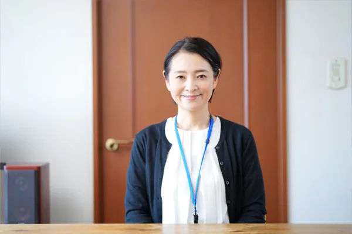

一人ひとりに向き合う看護
生活の場へ訪問し、ご本人とご家族の思いを伺いながら必要なケアを提供します。
RECRUIT
利用者様の暮らしにじっくり向き合う訪問看護。資格や経験を活かし、やんばるの地域医療に携わりませんか。
WORKING HERE
訪問先での看護だけでなく、主治医や関係機関と連携し、在宅での安心を支える仕事です。
生活の場へ訪問し、ご本人とご家族の思いを伺いながら必要なケアを提供します。

主治医やケアマネジャーなどと情報を共有し、チームで在宅療養を支えます。
勤務条件や業務内容の疑問は応募前でもご相談いただけます。
JOB DESCRIPTION
携帯電話を保持する夜間緊急対応が月に数回あります。手当は1回3,000円です。詳しい当番回数や対応方法は面談時にご確認ください。
GUIDELINES
募集状況や条件は変更となる場合があります。応募前に最新内容をご確認ください。
| 募集職種 | 訪問看護スタッフ |
|---|---|
| 雇用形態 | 正社員 |
| 仕事内容 | 訪問看護業務、関係機関との連携、記録・連絡調整、夜間緊急対応など |
| 試用期間 | なし |
| 学歴 | 専修学校以上 |
| 必要な資格 | 看護師または准看護師のいずれか、および普通自動車運転免許（AT限定可） |
| 年齢 | 64歳以下（採用後70歳まで更新） |
| 就業場所 | 〒905-0205 沖縄県国頭郡本部町字山川638-1 グリーンヒルヤマウチ4 101号室 |
| 訪問エリア | 名護市・本部町・今帰仁村 |
| 通勤・訪問 | 社用車で通勤し在宅訪問（直行直帰可能） |
| 給与 | 月給263,000円〜400,000円 |
| 昇給・賞与 | 昇給あり／賞与 年2回（200,000円〜480,000円） |
| 勤務時間 | 8:30〜17:30 |
| 時間外労働 | 月平均3時間 |
| 休日 | 週休2日制（シフト制） |
| 福利厚生 | 雇用保険、労災保険、健康保険、厚生年金、退職金制度あり |
APPLICATION
仕事内容や勤務条件について、応募前の質問も受け付けています。
担当者からご連絡し、面談等の日程を調整します。
業務内容と条件をご説明し、これまでの経験や希望を伺います。
選考結果と、その後の手続きについてご案内します。
応募前の確認や仕事内容の質問だけでも構いません。